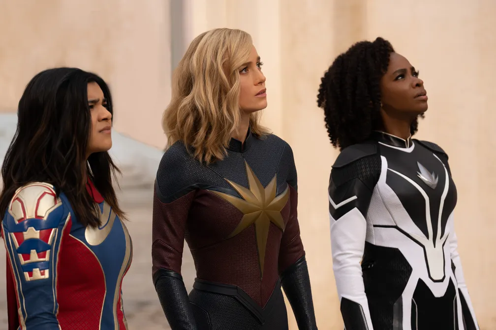

Todo dia novos artigos para sempre te manter informado
Governos federal e do RJ assinam nesta quarta acordo para a criação de força-tarefa contra lavagem de dinheiro do crime
O Ministério da Justiça e Segurança Pública (MJSP) e o governo do RJ assinam nesta quarta-feira (8) o Acordo de Cooperação
Técnica para a criação do Comitê de Inteligência Financeira e Recuperação de Ativos (Cifra). A força-tarefa tem o objetivo de intensificar
o combate às organizações criminosas através de investigações de lavagem de dinheiro e recuperação de ativos. A intenção é enfraquecer
financeiramente os grupos e reduzir o poder de expansão em comunidades do Rio. O acordo terá validade inicial de 12 meses, contados a partir da data da publicação de seu extrato no Diário Oficial da União,
podendo ser prorrogado. Após o prazo, os órgãos envolvidos deverão elaborar relatórios com resultados, discriminando as ações empreendidas e os objetivos alcançados.
Segundo os envolvidos no projeto, a criação do Cifra permitirá compartilhar informações, métodos e técnicas, o que pode servir de molde para
outros estados do Brasil.
Um dos pontos de partida para a criação do comitê são investigações já desenvolvidas pelo Departamento-Geral de Combate à Corrupção, ao Crime Organizado e à Lavagem de Dinheiro (DGCOR-LD) da Polícia Civil do Rio
com foco para a recuperação de ativos.

'As Marvels' reúne três heroínas das HQs no 'mundo cósmico' da Capitã Marvel, diz diretora
Em entrevista ao GS noticias, Nia DaCosta, diretora da grande produção fala sobre nova aventura da Marvel que estreia nesta quinta (9), estrelada por personagens apresentadas em filme de 2019 e na série de 2022.
Três heroínas dos quadrinhos que significam muito para gerações diferentes de leitores se encontram nos cinemas em "As Marvels", nova aventura da editora de mesmo nome que estreia no Brasil nesta quinta-feira (9).
O lançamento é estrelado por:
Carol Danvers/Capitã Marvel (Brie Larson), apresentada no filme de 2019;
Monica Rambeau, que apareceu ainda criança na mesma história e que depois ganhou poderes já adulta (Teyonah Parris) em "Wandavision"
kamala Khan/Ms. Marvel (Iman Vellani), que estrelou a própria série em 2022.
.png)